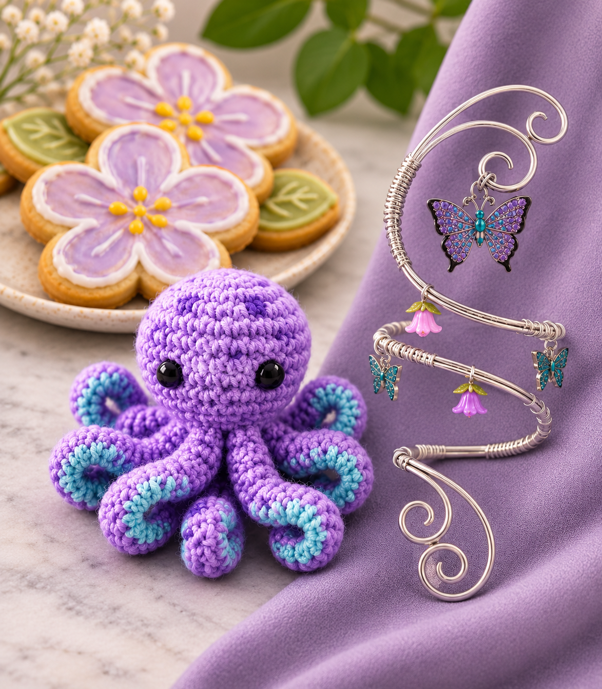

Engineering · Software · Crafting · Accessibility
I love to build things!
I'm Luna. I like finding things that interest me and turning them into real things I can build.
My projects range from rocket flight computers to an accessible grocery-finding app to the crafts I make and teach. Each one gives me a joy.

Rockets & Flight Computers
Space Why?
I've been building rockets and wanted to see if I could land one SpaceX style, so I began building more complicated designs and flight computers, designing circuit boards, and building a two-axis test platform.
Custom electronics · Firmware · Mechanical design · Flight testing
Explore Space Why

Mobile Apps & accessibility
WhereIsIt
Finding the right item on a crowded grocery shelf can be difficult when you have low vision. I'm developing an iPhone app that uses AI and shared shelf photographs to help locate products.
SwiftUI · Computer vision · Supabase · Voice accessibility
Explore WhereIsIt

Crafting & teaching
Crafting
I enjoy baking, crocheting, and making metal jewelry. I love making crafts and passing on what I've learned.
Crochet · Baking · Wirework · Teaching
Explore Crafting
The common thread
Learning by making
Building a flight computer, creating a grocery-finding app, and making things by hand, while different, all feed my love of building.
My experience with low vision has influenced how I think about accessible technology, from flight-data visualizations to an iPhone app designed to make shopping easier.
Explore each project above for more details about what I made, how I learned, and the challenges still ahead.